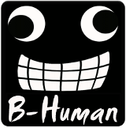

B-Human

Das Projekt Roboterfußball startete 2009 mit zwei RoboCup Teams B-Smart und B-Human. B-Smart wurde jedoch aus verschiedenen Gründen pausiert und die Mitglieder verstärkten daraufhin B-Human.
B-Human tritt beim RoboCup und dessen regionalen Ablegern in der Standard Platform League an. In dieser verwenden sämtliche Teams den humanoiden Roboter Nao der Firma Aldebaran Robotics, um gleiche Hardware Voraussetzungen zu gewährleisten. Somit konzentriert sich die Arbeit von B-Human vornehmlich darauf die Software für die Roboter weiter zu entwickeln. Dies umfasst diverse verschiedene Felder, unter anderem Bilderkennung, Lokalisation, so wie autonome Agenten.
Ziel war es erfolgreich am RoboCup teilzunehmen und in die Fußstapfen des Vorgängerprojektes zu treten. Dieses erspielte 2009 bereits den Weltmeistertitel. Dem Projekt Roboterfußball gelang es, aufbauend auf der Software der Vorgänger, ebenfalls 2010 den Weltmeistertitel zu gewinnen. Insgesamt hat B-Human somit inzwischen die RoboCup GermanOpen von 2009, 2010 und 2011, so wie zwei mal in Folge die Weltmeisterschaft gewonnen. Der RoboCup 2011 steht noch aus, doch hofft B-Human auch diesmal erfolgreich daran teilzunehmen.